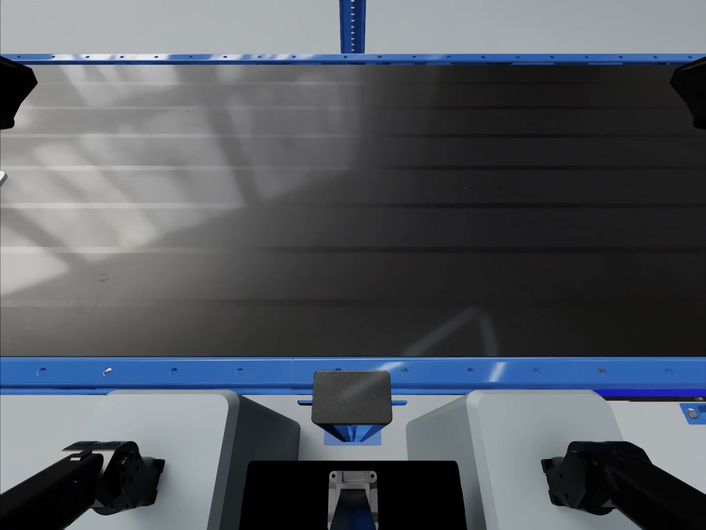
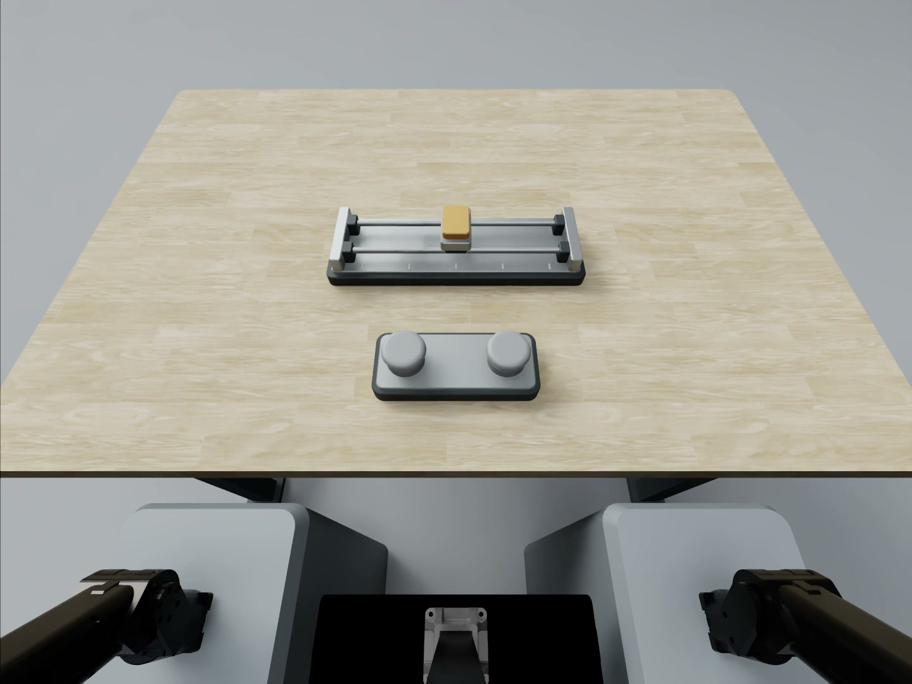
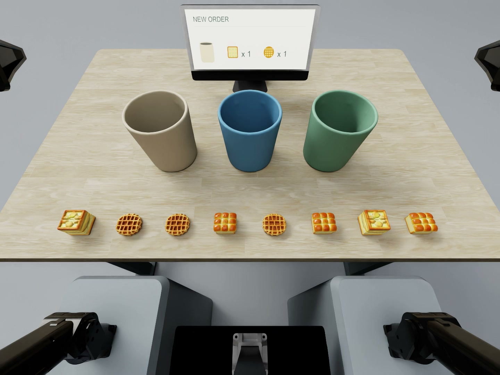
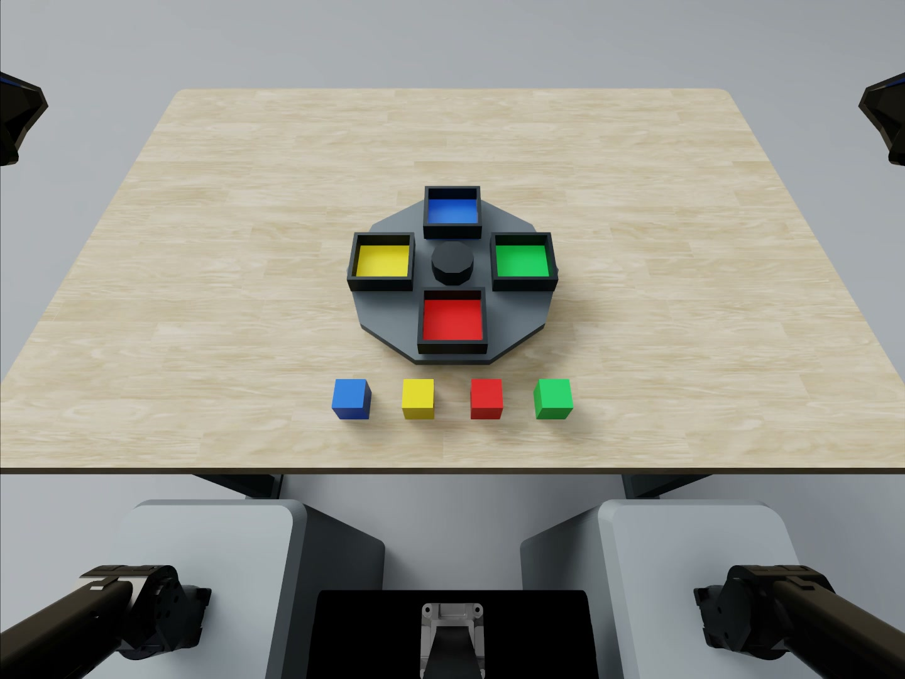
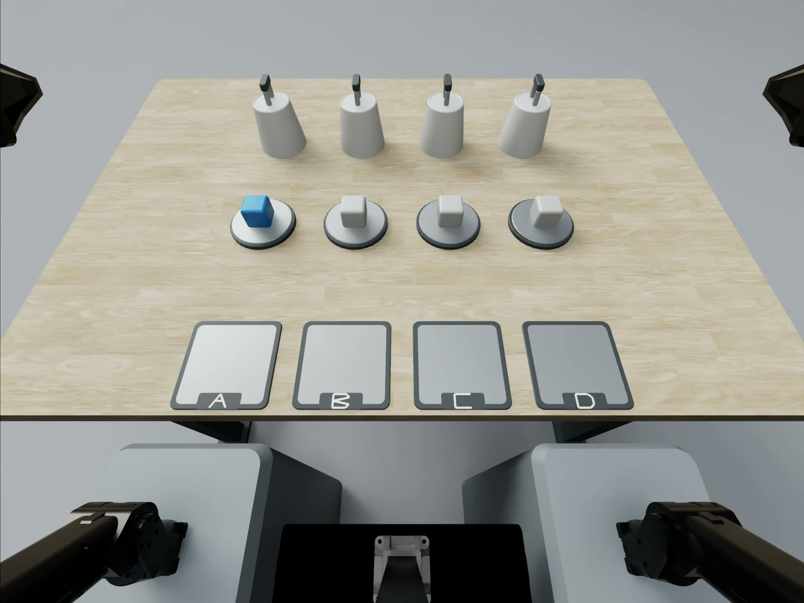
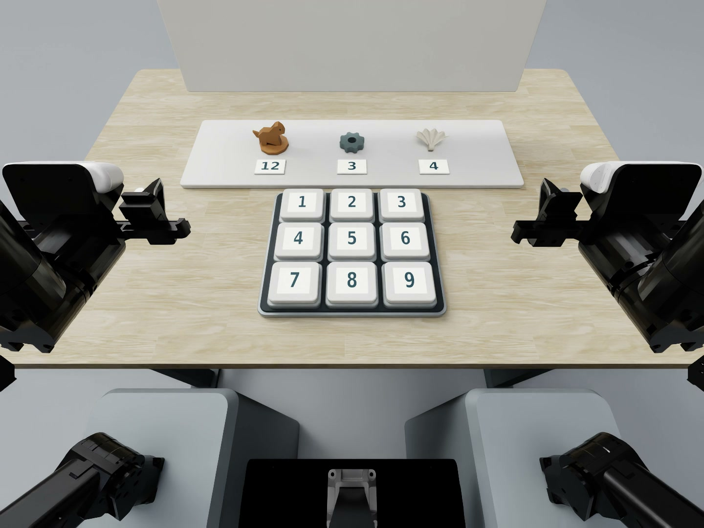
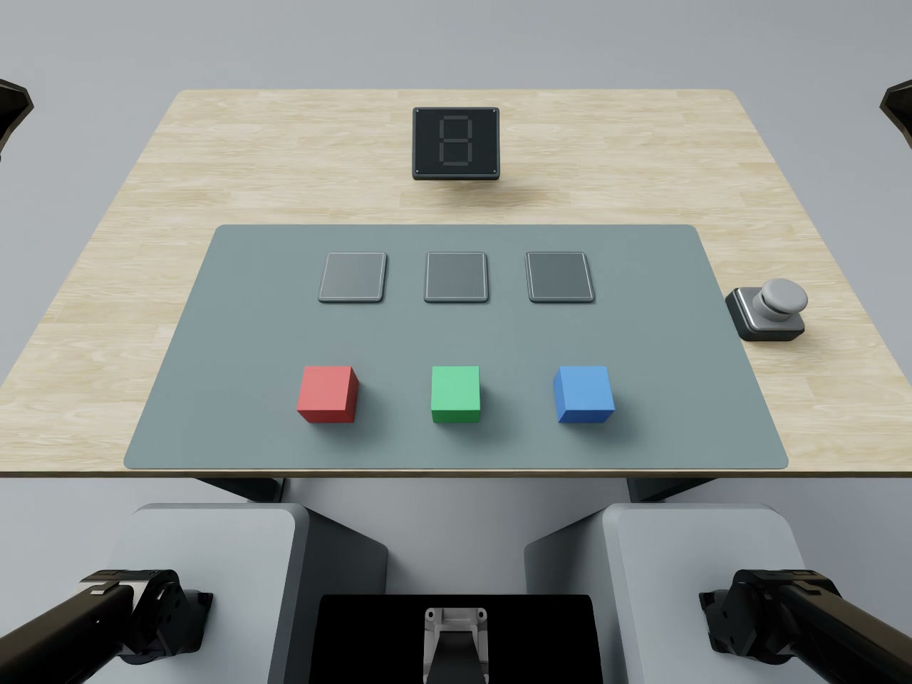
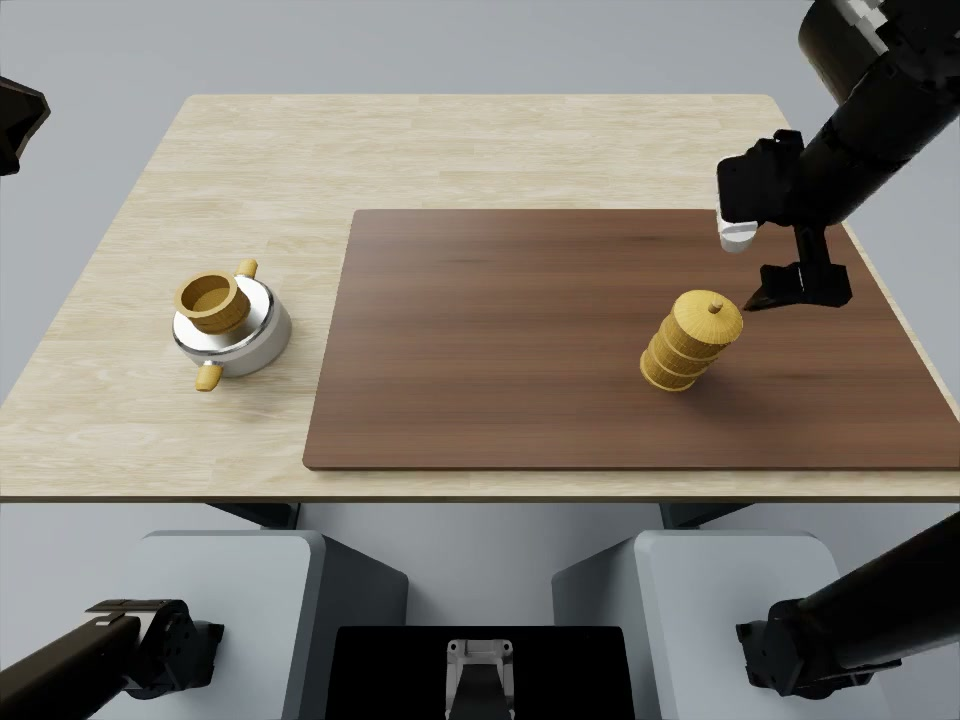
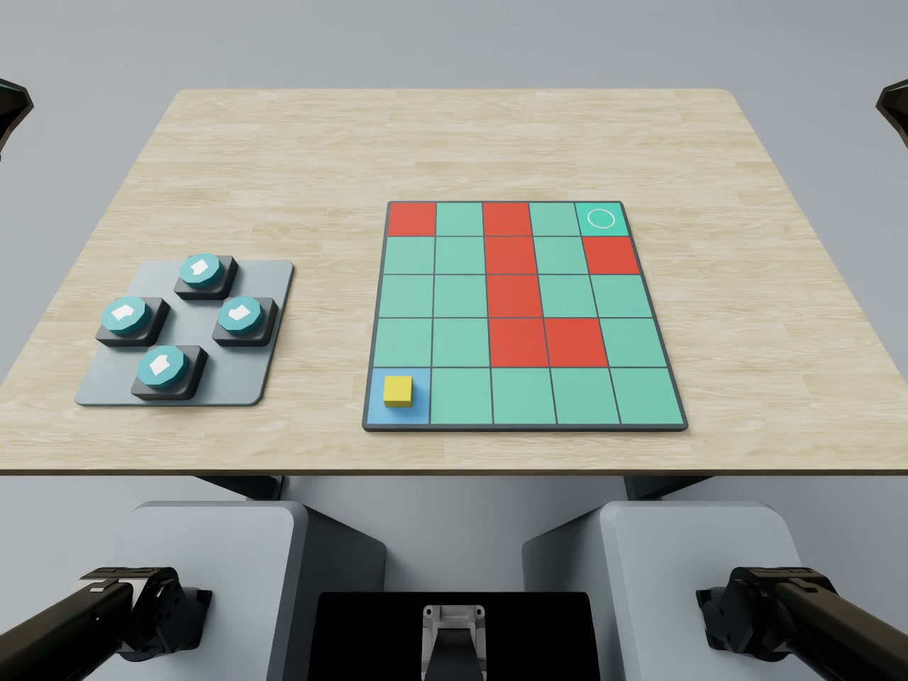
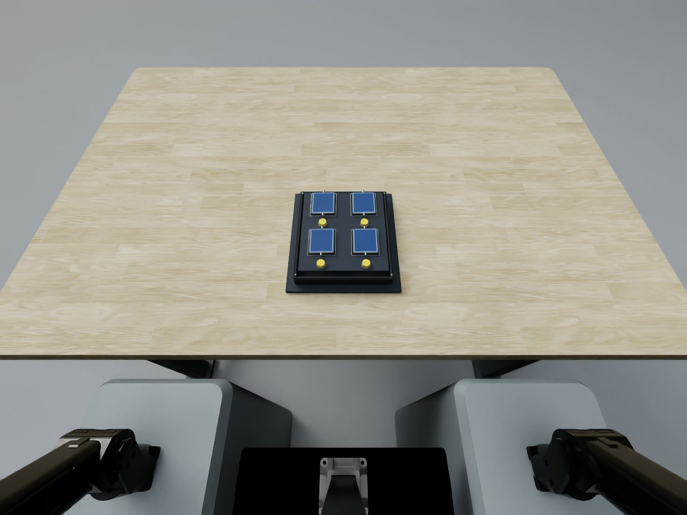

Duplicate Item Identification
Identify previously observed items across successive batches and place each repeated item in the submission tray.
View task
Memory and task decisions
Retain task information, learn from feedback, and choose the next operation.
What must the robot remember or infer before it acts?

Identify previously observed items across successive batches and place each repeated item in the submission tray.
View task
Infer an unknown button-to-motion mapping from feedback, retain it after reset, and navigate to the target.
View task
Remember initial and additional orders and deliver the requested ingredients to the correct containers.
View task
Remember a colored-slot arrangement and restore it after the tray rotates.
View task
Track a hidden target through cover exchanges and reproduce its required station route.
View task
Remember object–digit associations, decode a visible object sequence, and enter the corresponding code.
View task
Use feedback from trial arrangements to determine the required order of colored blocks.
View task
Remember a stack arrangement and reconstruct the order of the steamer components.
View task
Remember hidden restricted cells and guide a marker across the grid toward the goal.
View task
Remember revealed card identities and locations to find matching pairs.
View task